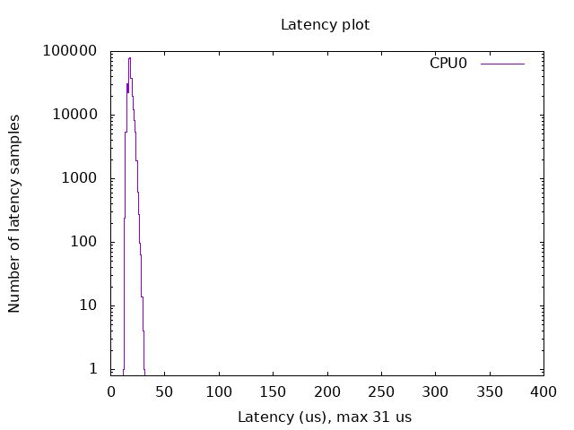

Build a Linux Real-Time kernel using docker
Introduction
This document explains how to build a real-time kernel using a docker container provided by the ROS Real-Time Working Group. The docker container comes with cross-compilation tools installed, and a ready-to-build RT kernel. This should be the preferred option for those users who simply want to use to cross-compile a new kernel.
Supported configuration
For the moment, the tool supports the following options:
5.4.0 kernel version and 5.4.86-rt48 patch
cross-compilation for aarch64
pre-configured kernel settings
Raspberry Pi 4 Model B Rev 1.2 (more platforms will be added in the future)
Build and run docker container
For the local build:
$ git clone https://github.com/ros-realtime/linux-real-time-kernel-builder
$ cd linux-real-time-kernel-builder
$ docker build -t rtwg-image .
$ docker run -t -i rtwg-image bash
Kernel configuration
By default the kernel is configured with the following options:
RT preempt real-time kernel
Fixed operation frequency at 1.0 GHz
CPU1, CPU2 and CPU3 tickless
No CPU frequency scaling
This is configured automatically by setting the following options:
$ ./scripts/config -d CONFIG_PREEMPT \
$ ./scripts/config -e CONFIG_PREEMPT_RT \
$ ./scripts/config -d CONFIG_NO_HZ_IDLE \
$ ./scripts/config -e CONFIG_NO_HZ_FULL \
$ ./scripts/config -d CONFIG_HZ_250 \
$ ./scripts/config -e CONFIG_HZ_1000 \
$ ./scripts/config -d CONFIG_AUFS_FS \
which corresponds to the following
# Enable CONFIG_PREEMPT_RT
-> General Setup
-> Preemption Model (Fully Preemptible Kernel (Real-Time))
(X) Fully Preemptible Kernel (Real-Time)
# Enable CONFIG_HIGH_RES_TIMERS
-> General setup
-> Timers subsystem
[*] High Resolution Timer Support
# Enable CONFIG_NO_HZ_FULL
-> General setup
-> Timers subsystem
-> Timer tick handling (Full dynticks system (tickless))
(X) Full dynticks system (tickless)
# Set CONFIG_HZ_1000
-> Kernel Features
-> Timer frequency (1000 HZ)
(X) 1000 HZ
# Set CPU_FREQ_DEFAULT_GOV_PERFORMANCE [=y]
-> CPU Power Management
-> CPU Frequency scaling
-> CPU Frequency scaling (CPU_FREQ [=y])
-> Default CPUFreq governor (<choice> [=y])
(X) performance
# Disable CONFIG_AUFS_FS, otherwise RT kernel build breaks
x -> File systems x
x (1) -> Miscellaneous filesystems (MISC_FILESYSTEMS [=y])
Todo:
CONFIG_CPU_FREQ=norCONFIG_CPU_FREQ_DEFAULT_GOV_ONDEMAND=y.CONFIG_CPU_IDLE=n: Disable transitions to low-power states
If you need to reconfigure it, run
$ cd linux-raspi-5.4.0/
$ make ARCH=arm64 CROSS_COMPILE=aarch64-linux-gnu- menuconfig
Kernel build
$ cd linux-raspi-5.4.0/
$ make ARCH=arm64 CROSS_COMPILE=aarch64-linux-gnu- -j `nproc` deb-pkg
You need 32GB free disk space to build it, it takes a while, and the results are located here:
user@3e9fd281ed2a:~/linux_build/linux-raspi-5.4.0$ ls -la ../*.deb
-rw-r--r-- 1 user user 11462528 Jun 17 09:46 ../linux-headers-5.4.114-rt57_5.4.114-rt57-1_arm64.deb
-rw-r--r-- 1 user user 494790284 Jun 17 09:50 ../linux-image-5.4.114-rt57-dbg_5.4.114-rt57-1_arm64.deb
-rw-r--r-- 1 user user 39756144 Jun 17 09:46 ../linux-image-5.4.114-rt57_5.4.114-rt57-1_arm64.deb
-rw-r--r-- 1 user user 1055224 Jun 17 09:46 ../linux-libc-dev_5.4.114-rt57-1_arm64.deb
Deploy
Download and install Ubuntu 20.04 image
Follow these links to download and install Ubuntu 20.04. In the case of the Raspberry PI:
# initial username and password
ubuntu/ubuntu
Copy a new kernel to your system and install it
Todo: Add instructions explaining how to move the files to the Raspberry PI
Assumed you have already copied all *.deb packages to your $HOME/ubuntu directory
$ cd $HOME/ubuntu
$ sudo dpkg -i *.deb
Now it is necessary to adjust vmlinuz and initrd.img links. First, we locate the kernel that we are using:
ubuntu@ubuntu:/boot$ uname -a
Linux ubuntu 5.4.0-1028-raspi #31-Ubuntu SMP PREEMPT Wed Jan 20 11:30:45 UTC 2021 aarch64 aarch64 aarch64 GNU/Linux
We check the real-time kernel version that we installed, in this case is 5.4.114-rt57:
ubuntu@ubuntu:~$ ls /boot/
System.map-5.4.0-1028-raspi config-5.4.0-1028-raspi dtb dtbs initrd.img-5.4.0-1028-raspi initrd.img.old vmlinuz-5.4.0-1036-raspi
System.map-5.4.0-1036-raspi config-5.4.0-1036-raspi dtb-5.4.0-1036-raspi firmware initrd.img-5.4.0-1036-raspi vmlinuz vmlinuz-5.4.114-rt57
System.map-5.4.114-rt57 config-5.4.114-rt57 dtb-5.4.114-rt57 initrd.img initrd.img-5.4.114-rt57 vmlinuz-5.4.0-1028-raspi vmlinuz.old
Now we replace the old kernel with the new real-time one:
$ cd /boot
$ sudo ln -s -f vmlinuz-5.4.114-rt57 vmlinuz
$ sudo ln -s -f vmlinuz-5.4.0-1028-raspi vmlinuz.old
$ sudo ln -s -f initrd.img-5.4.114-rt57 initrd.img
$ sudo ln -s -f initrd.img-5.4.0-1028-raspi initrd.img.old
$ sudo cp vmlinuz firmware/vmlinuz
$ sudo cp vmlinuz firmware/vmlinuz.bak
$ sudo cp initrd.img firmware/initrd.img
$ sudo cp initrd.img firmware/initrd.img.bak
$ sudo reboot
Configure boot options
Inside the Raspberry PI, add the following at the end of the line in /boot/firmware/cmdline.txt:
$ sudo vim /boot/firmware/cmdline.txt
# dwc_otg.fiq_fsm_enable=0 dwc_otg.fiq_enable=0 dwc_otg.nak_holdoff=0 dwg_otg.speed=1 rcu_nocbs=0 nohz_full=1-3 isolcpus=1-3 audit=0 watchdog=0 skew_tick=1
Here is an explanation of what each option will do:
dwc_otg.fiq_fsm_enable=0 dwc_otg.fiq_enable=0 dwc_otg.nak_holdoff=0: solves an issue causing a high CPU usage from the USB driver (see https://www.osadl.org/Single-View.111+M5c03315dc57.0.html)rcu_nocbs=0: relocates RCU callbacks to kernel threadsnohz_full=1-3: makes CPU1, CPU2 and CPU3 ticklessisolcpus=1-3: isolates CPU1, CPU2 and CPU3. No process will be automatically scheduled to these CPUs.audit=0watchdog=0: disables the watchdog timerskew_tick=1
TODO: explain all the boot options used
For more information see:
Verify that eveything is correctly configured
After reboot you should see a new RT kernel installed
ubuntu@ubuntu:/boot$ uname -a
Linux ubuntu 5.4.114-rt57 #1 SMP PREEMPT_RT Thu Jun 17 09:21:41 UTC 2021 aarch64 aarch64 aarch64 GNU/Linux
Check that fiq is actually disabled:
ubuntu@ubuntu:~$ dmesg | grep -i fiq
[ 0.000000] Kernel command line: coherent_pool=1M 8250.nr_uarts=1 snd_bcm2835.enable_compat_alsa=0 snd_bcm2835.enable_hdmi=1 bcm2708_fb.fbwidth=0 bcm2708_fb.fbheight=0 bcm2708_fb.fbswap=1 smsc95xx.macaddr=DC:A6:32:A7:32:00 vc_mem.mem_base=0x3ec00000 vc_mem.mem_size=0x40000000 net.ifnames=0 dwc_otg.lpm_enable=0 console=ttyS0,115200 console=tty1 root=LABEL=writable rootfstype=ext4 elevator=deadline rootwait fixrtc dwc_otg.fiq_fsm_enable=0 dwc_otg.fiq_enable=0 dwc_otg.nak_holdoff=0 dwg_otg.speed=1 rcu_nocbs=0 nohz_full=1-3 isolcpus=1-3 quiet splash
[ 1.771203] dwc_otg: FIQ disabled
[ 1.771212] dwc_otg: FIQ split-transaction FSM disabled
Check that interrupts, except timers, are only handled by CPU0:
ubuntu@ubuntu:~$ cat /proc/interrupts
CPU0 CPU1 CPU2 CPU3
1: 0 0 0 0 GICv2 25 Level vgic
3: 306043 106 104 103 GICv2 30 Level arch_timer
4: 0 0 0 0 GICv2 27 Level kvm guest vtimer
11: 41860 0 0 0 GICv2 65 Level fe00b880.mailbox
15: 0 0 0 0 GICv2 150 Level fe204000.spi
16: 1143 0 0 0 GICv2 125 Level ttyS0
17: 0 0 0 0 GICv2 149 Level fe804000.i2c
20: 0 0 0 0 GICv2 114 Level DMA IRQ
22: 0 0 0 0 GICv2 116 Level DMA IRQ
23: 342 0 0 0 GICv2 117 Level DMA IRQ
27: 47 0 0 0 GICv2 66 Level VCHIQ doorbell
28: 20553 0 0 0 GICv2 158 Level mmc1, mmc0
29: 0 0 0 0 GICv2 48 Level arm-pmu
30: 0 0 0 0 GICv2 49 Level arm-pmu
31: 0 0 0 0 GICv2 50 Level arm-pmu
32: 0 0 0 0 GICv2 51 Level arm-pmu
34: 840 0 0 0 GICv2 189 Level eth0
35: 475 0 0 0 GICv2 190 Level eth0
41: 0 0 0 0 GICv2 175 Level PCIe PME, aerdrv
42: 45 0 0 0 BRCM STB PCIe MSI 524288 Edge xhci_hcd
IPI0: 31 14 14 14 Rescheduling interrupts
IPI1: 0 277 277 278 Function call interrupts
IPI2: 0 0 0 0 CPU stop interrupts
IPI3: 0 0 0 0 CPU stop (for crash dump) interrupts
IPI4: 0 0 0 0 Timer broadcast interrupts
IPI5: 21717 8 8 6 IRQ work interrupts
IPI6: 0 0 0 0 CPU wake-up interrupts
Err: 0
Check that soft-interrupts, except timers, are only handled by CPU0:
ubuntu@ubuntu:~$ cat /proc/softirqs
CPU0 CPU1 CPU2 CPU3
HI: 2 0 0 0
TIMER: 343845 105 103 103
NET_TX: 165 0 0 0
NET_RX: 1628 0 0 0
BLOCK: 9192 0 0 0
IRQ_POLL: 0 0 0 0
TASKLET: 3728 0 0 0
SCHED: 0 0 0 0
HRTIMER: 60501 0 0 0
RCU: 0 0 0 0
Check that all the CPU cores are operating at 1000MHz:
# reset cpufreq stat counters
ubuntu@ubuntu:~$ echo '1' | sudo tee /sys/devices/system/cpu/cpu*/cpufreq/stats/reset
1
ubuntu@ubuntu:~$ cpufreq-info -s -m
600 MHz:0.00%, 700 MHz:0.00%, 800 MHz:0.00%, 900 MHz:0.00%, 1000 MHz:100.00%, 1.10 GHz:0.00%, 1.20 GHz:0.00%, 1.30 GHz:0.00%, 1.40 GHz:0.00%, 1.50 GHz:0.00%
Benchmark
Finally, we can benchmark the real-time performance of the configured kernel with the platform we are using. A common benchmark is to measure the interrupt latency using a tool named cyclictest.
For example you run a latency test imposing CPU and I/O stress in the system and verifying that the latency test results in good performance.
$ taskset -c 0 stress -c 1 &
$ taskset -c 1 stress -c 1 &
$ taskset -c 2 stress -c 1 &
$ taskset -c 3 stress -c 1 &
$ taskset -c 0 stress -i 1 &
$ taskset -c 1 stress -i 1 &
$ taskset -c 2 stress -i 1 &
$ taskset -c 3 stress -i 1 &
$ taskset -c 0 cyclictest -p 90 -m -t1 -n -D 3h -i 200 -a 1 -h500 -q
In order to generate a latency plot you can use the OSADL script.
